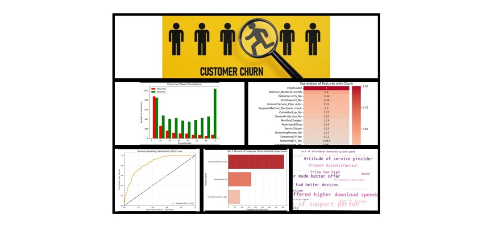
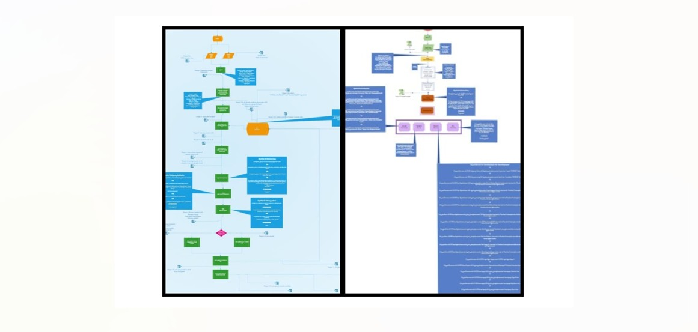
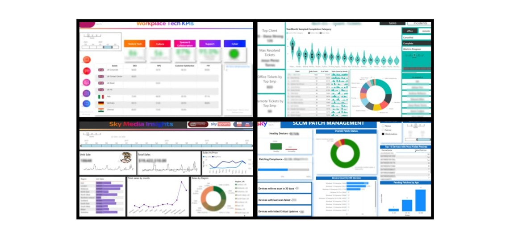

Engineered an end-to-end Python ecosystem integrating Unsupervised Machine Learning (K-Means/PCA)
for NLP sentiment intelligence and complex SQL-driven ETL for financial MSP auditing
Key Result: Reclaimed 20 weeks of annual manual effort by reducing
multi-day reporting cycles to under one hour while ensuring 100% financial reconciliation accuracy

Architected and deployed a suite of automated data pipelines and analytical engines—spanning Cyber Security (Endpoint Mgmt), Financial Operations (Media Revenue), and Corporate Strategy (Business Readiness)—to eliminate manual latency and unify fragmented telemetry.
Key Result: Replaced high-effort manual reporting with real-time executive insights, Replaced high-effort manual reporting with real-time executive insights, delivering actionable intelligence across the Sky Estate and significantly reducing Mean Time to Remediate (MTTR) and operational overhead.
